Perceiving, Acting, Planning, and Self-Explaining: A Cognitive Quartet for Future Manufacturing
University of Maryland, College Park
A Cognitive Quartet


Affordance-Aware Imitation Learning,
Zha et al., IROS, 2022
Recognizing Plans by Learning Embeddings from Observed Action Distributions,
Zha et al., AAMAS, 2018
Plan-Recognition-driven Attention Modeling for Visual Recognition,
Zha et al., AAAI-WS, 2019


Fundamental Robotics Challenges
Human-Robot Collaboration Challenges
NatSGD: A Dataset with Speech, Gestures, and Demonstrations
for Robot Learning in Natural Human-Robot Interaction,
Shrestha, Zha et al., AAAI Workshop, 2023
Symbols as a Lingua Franca for Bridging Human-AI
Chasm for Explainable and Advisable AI Systems,
Kambhampati, ..., Zha et al., AAAI, 2022
Explicable Planning as Minimizing Distance from Expected Behavior,
Kulkarni, Zha et al., AAMAS, 2019
Perception-Action Coupling

Contrastively Learning Visual Attention as Affordance Cues from Demonstrations for Robotic Grasping


https://sites.google.com/asu.edu/affordance-aware-imitation/project

Grasping Affordance
Grasping Affordance
ACRONYM,
Eppner et al., ICRA, 2021
Learning 6-dof task-oriented grasp detection via implicit estimation and visual affordance,
Chen, et al., IROS, 2022
✅ Affordance prediction can directly be used by a motion planner
✅ Affordance prediction can directly be used by a motion planner

❌ Human annotation of affordances incurs significant costs
Learning Affordance
from Demonstrations?
Learning Affordance from Demonstrations
Learning Affordance from Demonstrations

Learning a dictionary of prototypical grasp-predicting parts from grasping experience,
Renaud, et al., ICRA, 2013
Learning Affordance from Demonstrations
Learning a dictionary of prototypical grasp-predicting parts from grasping experience,
Renaud, et al., ICRA, 2013

Learning Affordance from Demonstrations
Learning a dictionary of prototypical grasp-predicting parts from grasping experience,
Renaud, et al., ICRA, 2013
✅ Eliminates the need for expensive affordance labeling


✅ Eliminates the need for expensive affordance labeling
❌ A motion planner is required to translate affordance predictions into grasp execution,
keeping affordance learning and policy construction/learning as distinct processes.
Insights from Human Cognition
Insights from Human Cognition

Insights from Human Cognition
 Affordance and attention share a close association, influencing how humans interact with objects
Affordance and attention share a close association, influencing how humans interact with objects
Human attention naturally gravitates towards object parts essential for task completion
Visual Attention as Affordance Cues
Visual Attention as Affordance Cues
Affordances are often implicitly encoded in visual attention
Visual Attention as Affordance Cues
Affordances are often implicitly encoded in visual attention
Visual attention directs focus towards relevant features indicating potential actions
Why Predict Affordance Cues?
Why Predict Affordance Cues?
Predicting affordance cues (salient visual features) is more efficient than predicting entire affordances
Why Predict Affordance Cues?
Predicting affordance cues (salient visual features) is more efficient than predicting entire affordances
Bridging the Gap: Affordance cues serve as a vital intermediary, facilitating the seamless integration between perception and policy construction
Merging the learning of affordance-cues and policy learning
Merging the learning of affordance-cues and policy learning
The robot not only replicates expert behavior but also assimilates the tacit affordance knowledge of the teacher


 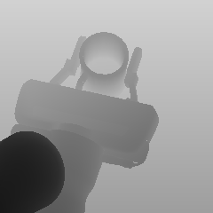
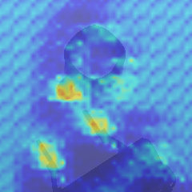
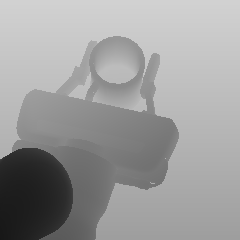
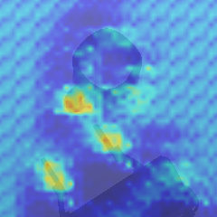


Can you propose any strategies for discovering affordance-cues?
Ask Yourself:
What distinguishes the two trajectories from each other
Contrastive Learning
Contrastive Learning
Contrastive learning is a machine learning technique aimed at understanding the underlying features of a dataset without labels
Contrastive Learning
Contrastive learning is a machine learning technique aimed at understanding the underlying features of a dataset without labels
It achieves this by instructing the model to discern similarities and differences between data points
Contrastive Learning
Contrastive learning is a machine learning technique aimed at understanding the underlying features of a dataset without labels
It achieves this by instructing the model to discern similarities and differences between data points

Contrastive Learning
Contrastive learning is a machine learning technique aimed at understanding the underlying features of a dataset without labels
It achieves this by instructing the model to discern similarities and differences between data points
Contrastive Learning for Affordance Discovery

Sample a trajectory from this category: $sample$-$a$
Sample a trajectory from the same
category as $sample$-$a$: $sample$-$p$
Sample a trajectory from a different
category as $sample$-$a$: $sample$-$n$
Contrastive Learning for Affordance Discovery

Contrastive Learning for Affordance Discovery

Contrastive Learning for Affordance Discovery
Contrastive Learning for Affordance Discovery
The Limitations of Directly Employing Triplet Loss
The Limitations of Directly Employing Triplet Loss
Recall: Affordances are featured in the interactions between a robot and an object, resulting in desired effects
The Limitations of Directly Employing Triplet Loss
Recall: Affordances are featured in the interactions between a robot and an object, resulting in desired effects
The demonstration data contains irrelevant information for affordance discovery
The Limitations of Directly Employing Triplet Loss
Recall: Affordances are featured in the interactions between a robot and an object, resulting in desired effects
The demonstration data contains irrelevant information for affordance discovery
It may condition on noisy context factors (e.g. initial states, obstacles)
Affordance-Aware Imitation Learning
Learn Two Types of Embeddings
Affordance Embedding $Z^A$ for demo trajectory $\tau^*$: $$z_\tau^A=F^A(\{(s_t,a^*_{t-1})\}^n_{t=m}|_{\tau^*})$$
Observation Embedding $Z^{o,A}_t$ for demo trajectory $\tau^*$: $$z_{t,\tau}^{o,A}=F^O(s_t,o_t,a^*_{t-1}|_{\tau^*})$$
Learn Two Types of Embeddings
Affordance Embedding $Z^A$ for demo trajectory $\tau^*$: $$z_\tau^A=F^A(\{(s_t,a^*_{t-1})\}^n_{t=m}|_{\tau^*})$$
Observation Embedding $Z^{o,A}_t$ for demo trajectory $\tau^*$: $$z_{t,\tau}^{o,A}=F^O(s_t,o_t,a^*_{t-1}|_{\tau^*})$$
How to couple their learning together?
Guiding Observation Embedding Learning through Affordance Embeddings


Guiding Observation Embedding Learning through Affordance Embeddings
Coupled Triplet Loss

Enhance the Relevance of $Z^{o,A}_t$ to Affordances
Simultaneously learning affordance cues and a grasping policy


Evaluation
Evaluation

A Franka Panda Arm in the PyBullet simulator


Success Rate (Percentage)
Full Model:
Siamese + Coupled Triplet Loss
Ablation 1:
Siamese + Triplet Loss
Ablation 2:
Without Contrastive Learning
Our work pioneers the integration of affordance-cue learning and policy learning within an end-to-end deep learning framework
Future Directions
Future Directions
Limitations:
Future Directions
Limitations:
1. Although affordance-cue learning enhances conscious perception and control, it does not leverage any domain-specific knowledge to maximize its benefits
Future Directions
Limitations:
1. Although affordance-cue learning enhances conscious perception and control, it does not leverage any domain-specific knowledge to maximize its benefits
Opportunities:
Future Directions
Limitations:
1. Although affordance-cue learning enhances conscious perception and control, it does not leverage any domain-specific knowledge to maximize its benefits
Opportunities:
1. Investigating multiple levels of interactions holds promise for uncovering richer affordance cues, particularly in tasks involving tool usage
Future Directions
Limitations:
1. Although affordance-cue learning enhances conscious perception and control, it does not leverage any domain-specific knowledge to maximize its benefits
Opportunities:
1. Investigating multiple levels of interactions holds promise for uncovering richer affordance cues, particularly in tasks involving tool usage
2. Tailoring affordance-cue prediction to different high-level task contexts and linking it with LLM-based planners could improve performance and adaptability
Future Directions
Limitations:
1. Although affordance-cue learning enhances conscious perception and control, it does not leverage any domain-specific knowledge to maximize its benefits
Opportunities:
1. Investigating multiple levels of interactions holds promise for uncovering richer affordance cues, particularly in tasks involving tool usage
2. Tailoring affordance-cue prediction to different high-level task contexts and linking it with LLM-based planners could improve performance and adaptability
3. Incorporating coupled triplet loss into other robot learning problems, where the guidance from high-level learning to low-level learning is crucial
Learning from Ambiguous Demonstrations with Self-Explanation Guided Reinforcement Learning


https://github.com/YantianZha/SERLfD
Robot Task Learning


How to convey the task knowledge to robots?
How to convey the task knowledge to robots?
Convey the task via (demonstrations)
Learning from Demonstrations (LfD)
Learning from Demonstrations (LfD)
Affordance-Aware Imitation Learning,
Zha et al., IROS, 2022

Coarse-to-Fine Imitation Learning,
Edward Johns, ICRA, 2021

One-Shot Imitation Learning,
Yu et al., RSS, 2018
✅ Demonstrations provide a robust learning signal,
contributing to sample-efficient learning
✅ Demonstrations provide a robust learning signal,
contributing to sample-efficient learning
❌ 1) Distribution drifting issues;
2) Learners cannot outperform demonstrators;
3) High dataset collection costs
Reinforcement Learning
Robot Task Learning
How to convey the task knowledge to robots?
Convey the task via (demonstrations) Convey the task via (rewards)
Reinforcement Learning (RL)
Reinforcement Learning (RL)
✅ Learners could outperform teachers;
More robust to distribution-drifting; No need of demonstrations

✅ Learners could outperform teachers;
More robust to distribution-drifting; No need of demonstrations
❌ Learning is not sample-efficient (especially in sparse-reward environments)
RL + LfD?
RL + LfD: Reinforcement Learning from Demonstrations (RLfD)
RL + LfD: Reinforcement Learning from Demonstrations (RLfD)
✅ Combine the benefits of RL and LfD – making RL more sample-efficient

✅ Combine the benefits of RL and LfD – making RL more sample-efficient
❌ Still inefficient to handle ambiguity in demonstrations and environments
Insights from Human Cognition
Insights from Human Cognition
Insights from Human Cognition
Humans are aware and reflective of their own learning
Humans instinctively self-explain experiences, covering problem-solving, mistakes, and the actions and outcomes of others
Insights from Human Cognition
 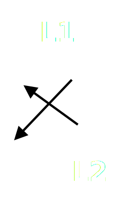
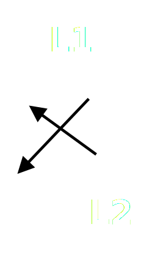
Self-Explanation:
object-location > object-color

Self-Explanation:
object-location < object-color
Background Knowledge: Shared Vocabulary
 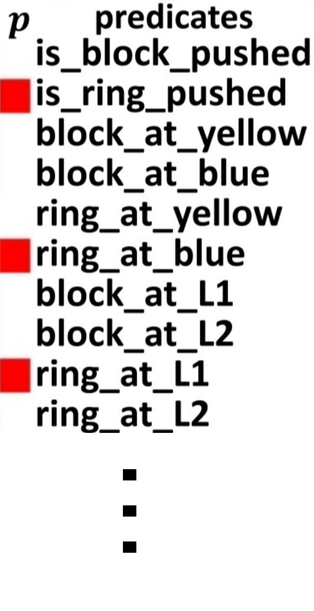
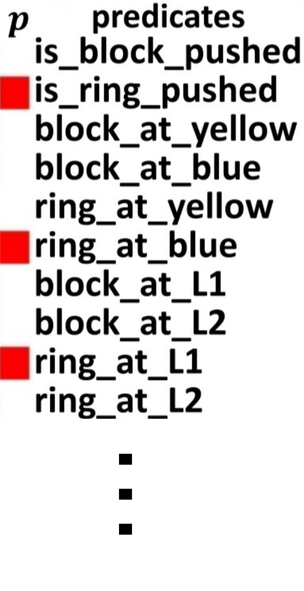
Self-Explanation for RLfD (SERLfD)
Self-Explanation for RLfD (SERLfD)
Robots take human advice
Self-Explanation for RLfD (SERLfD)
Robots take human advice
Self-Explanation for RLfD (SERLfD)
Robots take human advice
Self-Explanation for RLfD (SERLfD)
Robots take human advice
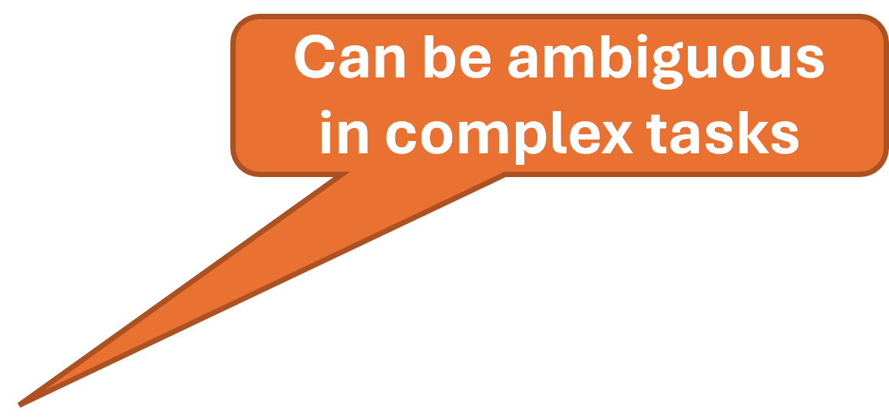


Evaluation Domains
Evaluation Domains
Robot-Push-Simple
6 Predicates
Continuous Action Space
Robot-Push
10 Predicates
Continuous Action Space
Robot-Remove-and-Push
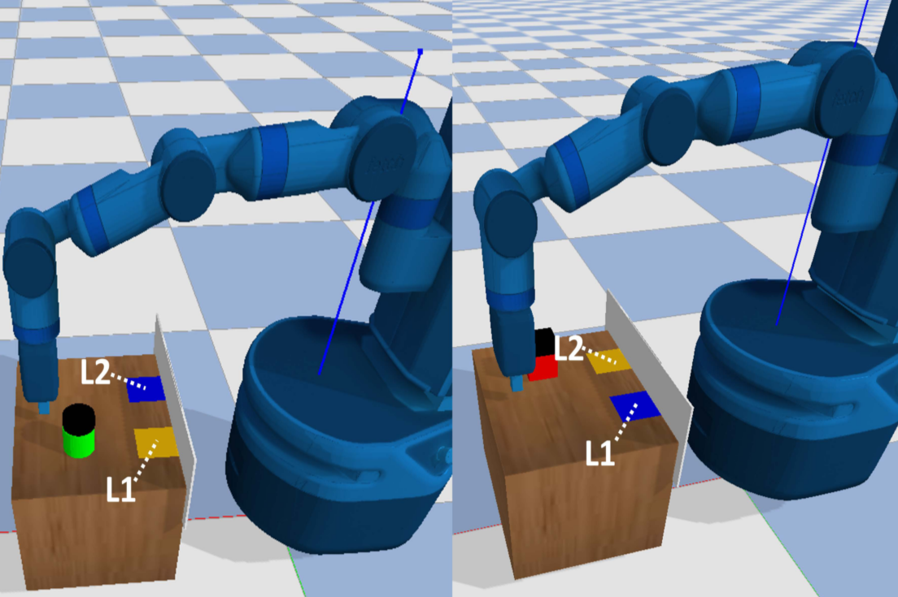
20 Predicates
Continuous Action Space
Pacman

2 Predicates
Discrete Action Space


Our work pioneers the integration of self-explanation into robot learning using deep neural networks.
Future Directions
Future Directions
Limitations:
Future Directions
Limitations:
1. The symbolic vocabulary, representing the robots' background knowledge, is pre-defined and finite.
Future Directions
Limitations:
1. The symbolic vocabulary, representing the robots' background knowledge, is pre-defined and finite.
Opportunities:
Future Directions
Limitations:
1. The symbolic vocabulary, representing the robots' background knowledge, is pre-defined and finite.
Opportunities:
1. Enhance the self-explanation guided learning mechanism.
Future Directions
Limitations:
1. The symbolic vocabulary, representing the robots' background knowledge, is pre-defined and finite.
Opportunities:
1. Enhance the self-explanation guided learning mechanism.
2. Utilize the self-explanation guided learning to enhance various learning frameworks.
Future Directions
Limitations:
1. The symbolic vocabulary, representing the robots' background knowledge, is pre-defined and finite.
Opportunities:
1. Enhance the self-explanation guided learning mechanism.
2. Utilize the self-explanation guided learning to enhance various learning frameworks.
3. Harness the power of self-explanation guided learning to address diverse problems and challenges.
Human-Robot Collaboration

Exploring Avenues for Human-Robot Communication
Exploring Avenues for Human-Robot Communication
1. Requesting humans to decipher the internal representations of robots
❌ Human-AI systems should be
designed for the benefits of humans
Exploring Avenues for Human-Robot Communication
2. Providing Humans with Access to Raw Data, Including Attention Images, Videos, and Trajectories, for Communication
✅ Combine the benefits of RL and LfD – making RL more sample-efficient
❌ Imposes significant cognitive
burden on humans
❌ Presents scalability challenges
for human-interaction tasks requiring
a blend of tacit and explicit task
knowledge
Exploring Avenues for Human-Robot Communication
3. Disseminating Understandable Concepts to Humans
✅ Aligns with human habitats, where symbols emerge for efficient human communication
Symbols as a Lingua Franca for Bridging Human-AI Chasm for Explainable and Advisable AI Systems (Blue Sky Paper)
Maintain a Symbolic Interface
Maintain a Symbolic Interface
The symbolic interface facilitates seeking advice from humans or providing explanations for robots' decisions to humans
Maintain a Symbolic Interface
Open Challenges
Open Challenges

Can relying solely on a symbolic interface ensure natural and seamless human-robot interaction?
Insights from Human Cognition
Insights from Human Cognition
Insights from Human Cognition
Language-based communication effectively conveys explicit knowledge, whereas behavior-based communication excels in expressing tacit knowledge
Human communication often involves the concurrent use of both (e.g. language and gestures)
NatSGD: A Dataset with Speech, Gestures, and Demonstrations for Robot Learning in Natural Human-Robot Interaction


https://www.snehesh.com/natsgd/

Pass me that PLATE!!!!
Understanding Speech-Gesture Commands
Understanding Speech-Gesture Commands
Understanding Speech-Gesture Commands
Natural Interaction: Robots understanding speech and gestures can interact more intuitively with humans
Contextual Adaptation: They can grasp context
better, leading to more accurate responses
and task execution
Increased Efficiency: Parsing multiple
communication modalities enables quicker
action and reduces errors
Accessibility and Inclusivity: Dual-capability caters to a broader user base, including those with disabilities or language barriers
NatSGD Overview
NatSGD Overview
NatSGD Overview
NatSGD Overview
18 individuals instruct a robot using natural speech and gestures
A robot expert guides the robot using multimodal instructions during expert demonstration recordings
NatSGD Data
Benchmark Task:
Multi-modal Task Understanding
Benchmark Task:
Multi-modal Task Understanding

Benchmark Task:
Multi-modal Task Understanding
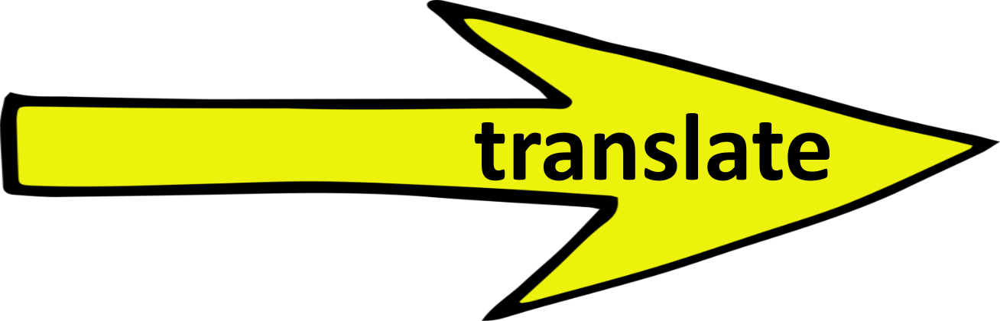
Benchmark Task:
Multi-modal Task Understanding
Robots' Task Understanding:
How to Represent “Task Understanding”?
How to Represent “Task Understanding”?
Linear Temporal Logic (LTL)
Automata
Linear Temporal Logic (LTL) Annotations
We annotated a total 736 LTL formulae for 1143 pairs of speech texts and gestures
Linear Temporal Logic (LTL) Annotations
Better leverage the power of language models
Better connect to other logic reasoning and planning systems
LTL and Automata can convert to each other
Neural Network Framework:
Multi-modal Task Understanding
Neural Network Framework:
Multi-modal Task Understanding
NatSGD Evaluation
NatSGD Evaluation
NatSGD Evaluation Metrics
NatSGD Evaluation Metrics
NatSGD Evaluation Metrics
LTL formulas express temporal properties in a concise, human-readable way, while automata represent these properties in a more structured, machine-readable format
Automata-based approaches may offer greater efficiency and scalability for large or complex systems than directly manipulating LTL formulas
LTL Prediction Scores
Speech Only
Gestures Only
Speech + Gestures